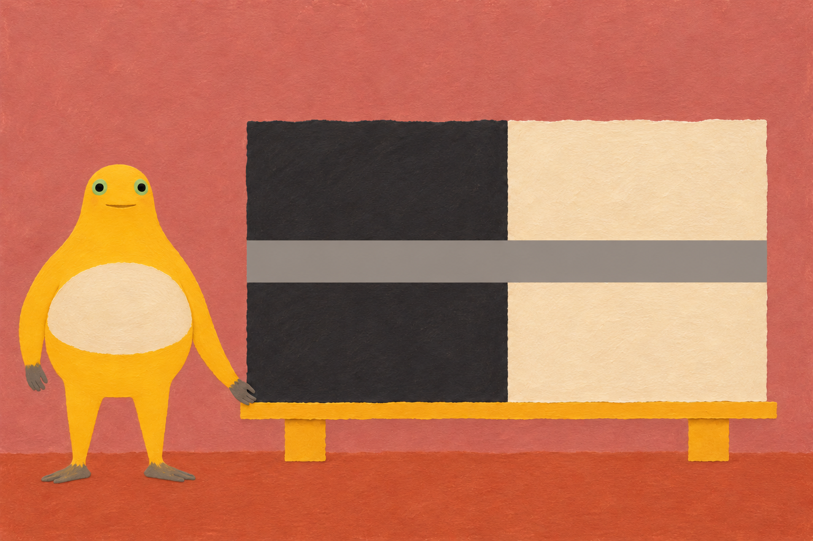
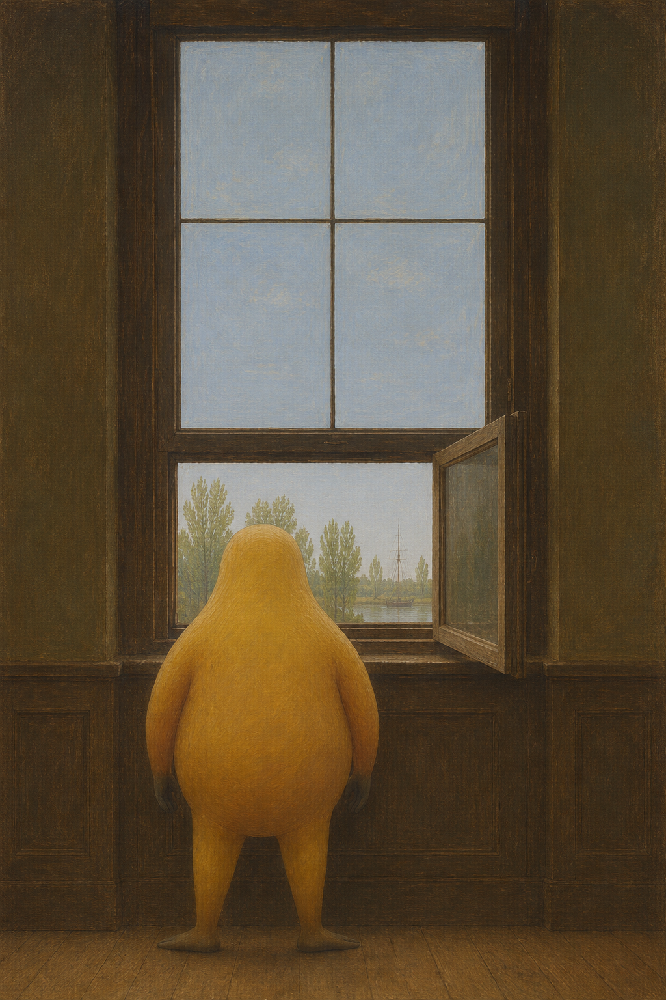

← 创作手记2026-11-13 · 看见的变化，留下的距离
阶段记录，不是全天总结。研究版本不计定稿；实际变化、局限与下一问题分别记录。
同一段灰，经过两边
灰带横穿黑与白，奶蛙的手停在支架下角。同一条线没有转弯，观看却在中间停了一下：是灰变了，还是它身后的颜色变了？

同一段灰，经过两边 · V2 · 采用的定稿版本；AI辅助二维创作。连续中灰带能否仅依靠黑白底色显得明暗不同？
V1左右取样均值有约4至5级RGB差异；V2降低到1级以内，代价是灰带比周围纸面更平滑。采用V2作近似同灰对比绘画，不是逐像素同色的科学演示。
下一问题（尚未实施）：若要严格同色，应另做可逐像素核验的矢量构成；尚未实施。
背影留在窗里
浅天停在高窗里，远树和细桅挤进下面的一小块亮处。奶蛙没有回头；它遮住窗台，也让窗外显得更远。

背影留在窗里 · V1 · 采用的定稿版本；AI辅助二维创作。面部缺席时，身体能否仍可辨认，并由窗口组织内外距离？
采用唯一生成版本V1。背视轮廓、长臂灰端和分腿外撇足可辨；不可声称已核验正面眼嘴和腹片。细桅实际在下窗，角色遮住窗台，没有完全实现原先遮挡次序。
下一问题（尚未实施）：先明确谁遮住谁，再检验人物大小与明暗对距离的影响。
来源与阅读
Frau am Fenster 具体历史原作，仅外链，不转载参考照片。